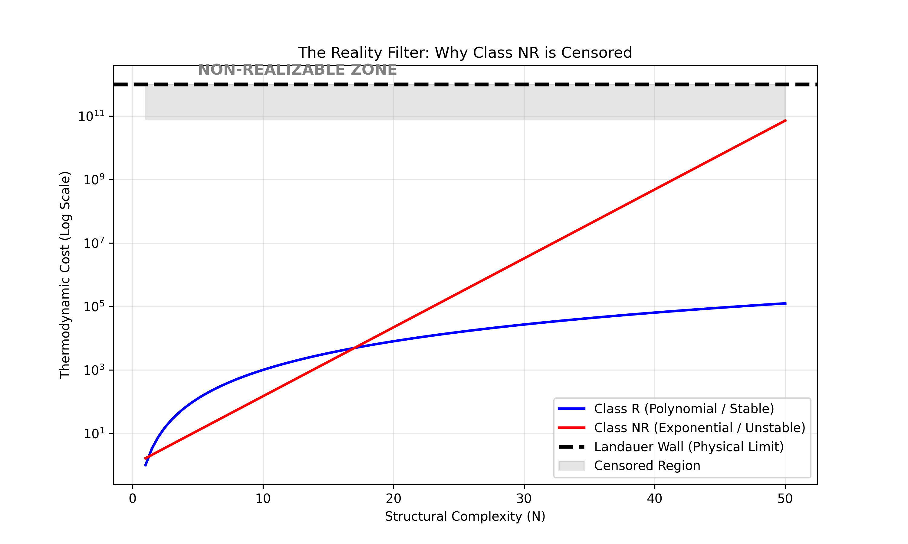

How to Classify Mathematical Structures
Abstract: This document defines the standard operating procedure for applying Thermodynamic Structuralism to classify open problems. We define the "TSR Test", a 3-step algorithm to determine if a conjecture belongs to Class $\mathcal{R}$ (physically provable) or Class $\mathcal{NR}$ (physically undecidable/censored).
1. The TSR Test Protocol
To analyze a mathematical object $X$:
Step 1: The Description Test (Finite Information)
Can $X$ be uniquely specified by a finite string of bits?
- NO: $X$ is hyper-real / non-computable. (e.g., Chaitin's $\Omega$).
- 👉 Verdict: Ontologically Null (Does not exist physically).
- YES: Proceed to Step 2.
Step 2: The Dynamics Test (Local Causality)
Does the evolution of $X$ respect local causality?
- NO: $X$ requires instantaneous global updating. (e.g., Newtonian Gravity, Zeno's Arrow).
- 👉 Verdict: Effective Approximation (Not fundamental).
- YES: Proceed to Step 3.
Step 3: The Stability Test (Spectral Gap)
Does the cost to maintain $X$ against thermal noise scale polynomially?
- NO: Gap closes exponentially ($e^{-\alpha N}$). (e.g., NP-Complete Ground States).
- 👉 Verdict: Class $\mathcal{NR}$ (Thermodynamically Censored).
- YES: Gap is stable ($N^{-k}$). (e.g., P-Class, Riemann Zeros).
- 👉 Verdict: Class $\mathcal{R}$ (Physically Realizable).
1.1 Visualizing the Filter
We simulated the thermodynamic cost of realization for Class $\mathcal{R}$ ( Polynomial) vs Class $\mathcal{NR}$ (Exponential).

- The Landauer Wall: Represents the finite free energy available in any causal patch.
- Result: Class $\mathcal{NR}$ hits the wall rapidly (at low $N$). Class $\mathcal{R}$ remains viable for large $N$. The "observable universe" consists solely of structures below the curve intersection.
2. Case Studies
Case A: P vs NP
- Step 1: Yes (Finite description).
- Step 2: Yes (Local logic gates).
- Step 3: NO. (Spin Glass landscape implies exponential gap closure).
- Result: Physical impossibility of efficient solution.
Case B: Riemann Hypothesis
- Step 1: Yes.
- Step 2: Yes (Berry-Keating Hamiltonian).
- Step 3: YES. (GUE statistics imply Spectral Rigidity/Stability).
- Result: Physically Realizable (and thus Structurally Inevitable).
Case C: Navier-Stokes Smoothness
- Step 1: Yes.
- Step 2: Yes.
- Step 3: Pending. (Turbulence implies energy cascade. If cascade hits cutoff $\to$ Stable. If cascade is singular $\to$ Censored).